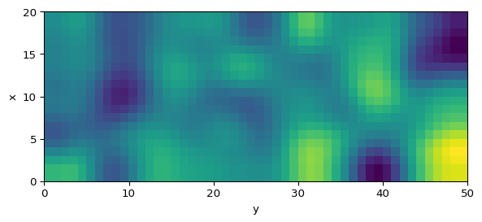

Gierer-Meinhardt Model in 2D
Extending the Solver to a Grid
Now we lift the same reaction terms to two spatial dimensions. The main conceptual change is the Laplacian. Everything else follows the same workflow you already used in 1D.
If your 1D code was modular, half the work is already done. This page is mostly about changing the data shape and handling neighbors in two directions instead of one.
The PDE is still
\[ \begin{aligned} \frac{\partial u}{\partial t} &= \Delta u + \gamma \left(a - b u + \frac{u^2}{v}\right), \\ \frac{\partial v}{\partial t} &= d\,\Delta v + \gamma \left(u^2 - v\right), \end{aligned} \tag{1}\]
but now \(u\) and \(v\) depend on \((x, y, t)\).
Discretize the 2D Laplacian
This is the real jump from the previous page. In 1D, every point had two nearest neighbors. In 2D, every point in the interior has four cardinal neighbors, so the Laplacian becomes a stencil on a grid.
In two dimensions,
\[ \Delta u = \frac{\partial^2 u}{\partial x^2} + \frac{\partial^2 u}{\partial y^2}. \tag{2}\]
The standard 5-point stencil is
\[ \Delta u(x,y) \approx \frac{u(x+dx,y) + u(x-dx,y) + u(x,y+dx) + u(x,y-dx) - 4u(x,y)}{dx^2}. \tag{3}\]
Implement that stencil with np.roll().
import numpy as np
def laplacian_2d(field, dx):
# TODO: combine the four nearest neighbors and the center point
lap =
return lap / dx**2
Hint: 2D Laplacian (click to expand)
def laplacian_2d(field, dx):
lap = -4 * field
lap += np.roll(field, shift=1, axis=0)
lap += np.roll(field, shift=-1, axis=0)
lap += np.roll(field, shift=1, axis=1)
lap += np.roll(field, shift=-1, axis=1)
return lap / dx**2
Note
This stencil assumes periodic wrapping through np.roll(). If you want Neumann boundaries, you still need to overwrite the edges after every Euler step.
Initialize the Grid
import numpy as np
np.random.seed(3)
length_x = 20
length_y = 50
dx = 1
num_x = int(length_x / dx)
num_y = int(length_y / dx)
# TODO: create a homogeneous state with u = 1 and v = 1
uv =
# TODO: add 1% random perturbations
uv +=
Hint: 2D initialization (click to expand)
uv = np.ones((2, num_x, num_y))
uv += uv * np.random.randn(2, num_x, num_y) / 100Build the PDE Right-Hand Side
def gierer_meinhardt_pde_2d(t, uv, gamma=1, a=0.40, b=1.00, d=20, dx=1):
u, v = uv
lu = laplacian_2d(u, dx)
lv = laplacian_2d(v, dx)
# TODO: write the reaction terms
f =
g =
# TODO: combine diffusion and reaction
du_dt =
dv_dt =
return np.array([du_dt, dv_dt])
Hint: Gierer-Meinhardt PDE in 2D (click to expand)
def gierer_meinhardt_pde_2d(t, uv, gamma=1, a=0.40, b=1.00, d=20, dx=1):
u, v = uv
lu = laplacian_2d(u, dx)
lv = laplacian_2d(v, dx)
f = a - b * u + (u**2) / v
g = u**2 - v
du_dt = lu + gamma * f
dv_dt = d * lv + gamma * g
return np.array([du_dt, dv_dt])Time Step with Euler’s Method
Before you animate anything, validate the numerical update with a long loop and one static snapshot. That is the same workflow we used in earlier sessions: get the update rule right first, then wrap it in animation logic.
num_iter = 50000
dt = 0.001
for _ in range(num_iter):
dudt, dvdt = gierer_meinhardt_pde_2d(0, uv, dx=dx)
# TODO: Euler update for u and v
# TODO: Neumann boundary conditions in x and y
Hint: 2D Euler loop (click to expand)
for _ in range(num_iter):
dudt, dvdt = gierer_meinhardt_pde_2d(0, uv, dx=dx)
uv[0] = uv[0] + dt * dudt
uv[1] = uv[1] + dt * dvdt
uv[:, 0, :] = uv[:, 1, :]
uv[:, -1, :] = uv[:, -2, :]
uv[:, :, 0] = uv[:, :, 1]
uv[:, :, -1] = uv[:, :, -2]Plot a Snapshot
import matplotlib.pyplot as plt
fig, ax = plt.subplots(figsize=(7, 4))
im = ax.imshow(
uv[1],
interpolation="bilinear",
origin="lower",
extent=[0, length_y, 0, length_x],
)
ax.set_xlabel("y")
ax.set_ylabel("x")
plt.colorbar(im, ax=ax, label="v(x, y)")
plt.show()Animate the Simulation
import matplotlib.animation as animation
import matplotlib.pyplot as plt
fig, ax = plt.subplots(figsize=(7, 4))
im = ax.imshow(uv[1], origin="lower", extent=[0, length_y, 0, length_x])
def update_frame(_):
# TODO: advance uv by one or several Euler steps
# TODO: apply Neumann boundary conditions
im.set_array(uv[1])
return (im,)
ani = animation.FuncAnimation(fig, update_frame, interval=1, blit=True)
Hint: 2D animation update (click to expand)
def update_frame(_):
nonlocal uv
dudt, dvdt = gierer_meinhardt_pde_2d(0, uv, dx=dx)
uv[0] = uv[0] + dt * dudt
uv[1] = uv[1] + dt * dvdt
uv[:, 0, :] = uv[:, 1, :]
uv[:, -1, :] = uv[:, -2, :]
uv[:, :, 0] = uv[:, :, 1]
uv[:, :, -1] = uv[:, :, -2]
im.set_array(uv[1])
return (im,)Optional: Try a 9-Point Stencil
The 5-point stencil is the standard choice, but you can improve the rotational symmetry of the Laplacian with a 9-point stencil. That is a good extension if you want to compare numerical accuracy.
Explore
Use the Turing page to compare the cases \(d=20\) and \(d=30\). Does the pattern that forms on your grid match the change suggested by the unstable mode analysis?
What’s Next?
The Gierer-Meinhardt model is a good training ground, but the final target of the session is Gray-Scott. It uses the same numerical ideas with different reaction terms and richer visual patterns.
Tip
Reference code is available in amlab/pdes_2d/gierer_meinhardt_2d.py.